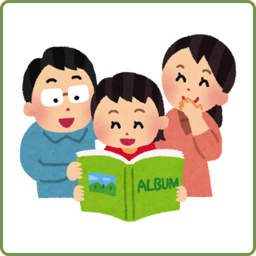
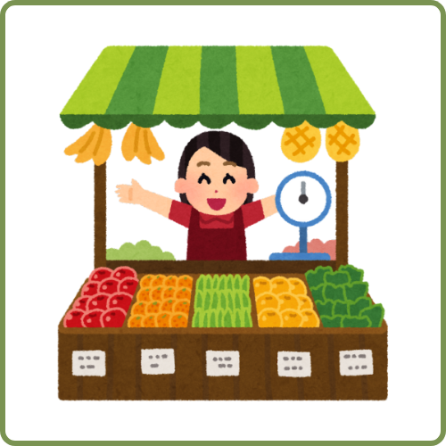

O que promovem esses eventos:
INTEGRAÇÃO SOCIAL:
Esses eventos oferecem oportunidades para que as pessoas da roça se reúnam, interajam e compartilhem experiências em um ambiente festivo e acolhedor, fortalecendo os laços comunitários e promovendo a integração social.

ESTIMULAR O TURISMO LOCAL
Ao promover manifestações culturais em diferentes regiões, esses eventos podem atrair visitantes de outras localidades, impulsionando o turismo e gerando impactos econômicos positivos para a comunidade.

ESTIMULO AO TURISMO
Promove o reconhecimento do trabalho de fazendas familiares pequenas, intensificando os luucros e auxiliando na venda de produtos para a sociedade.